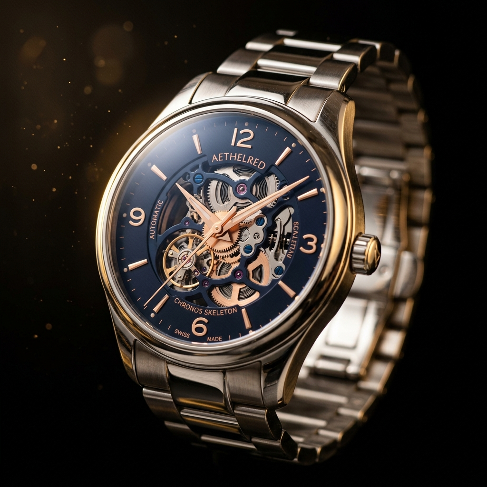
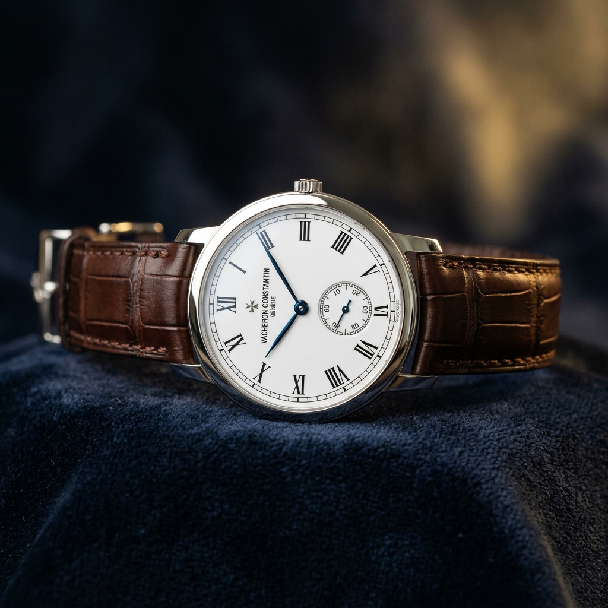
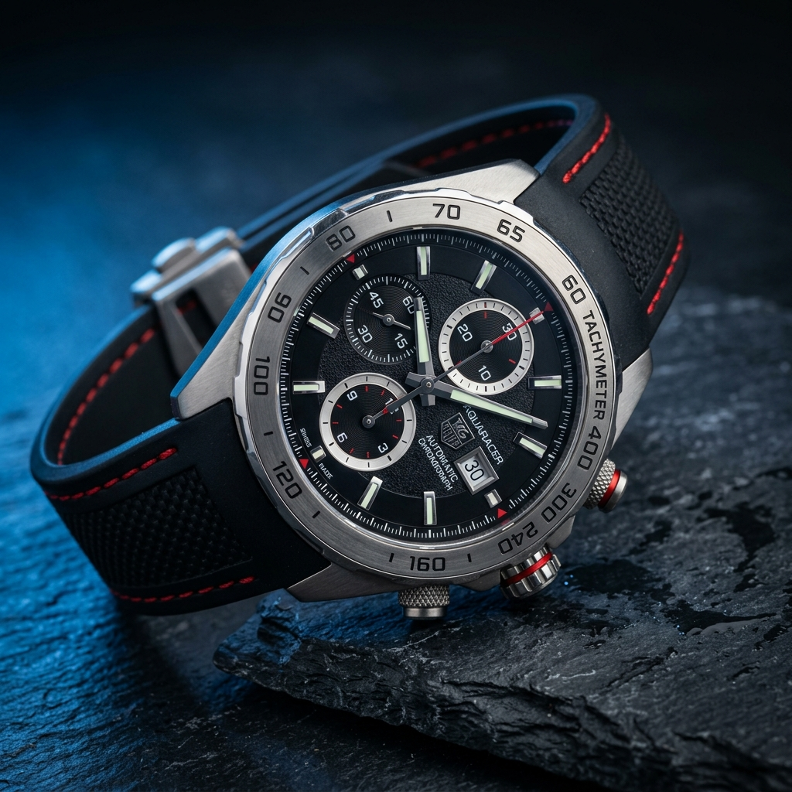
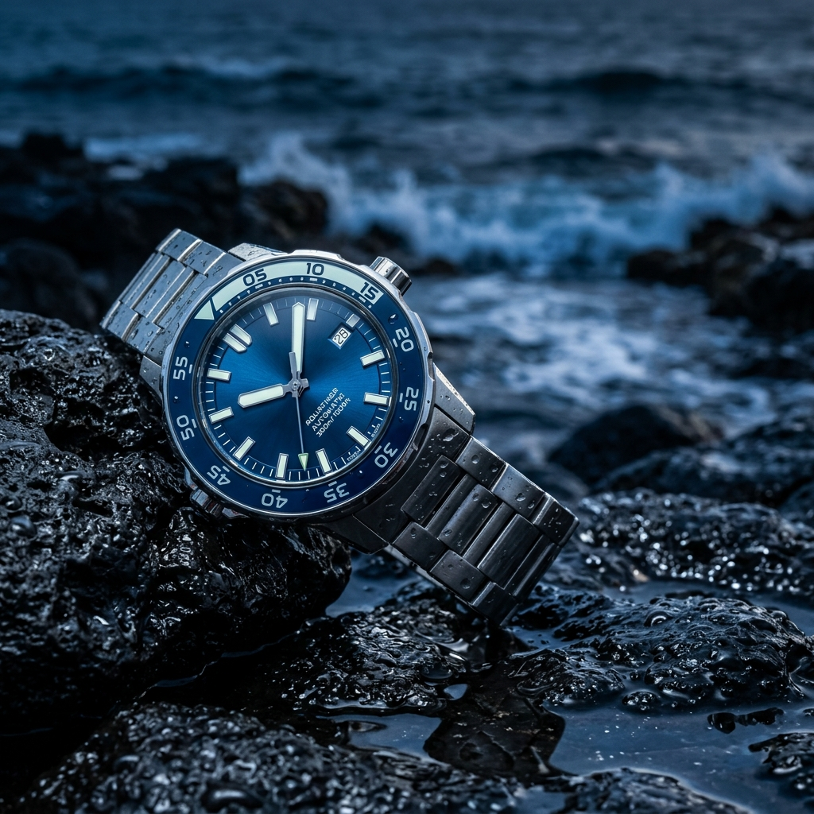
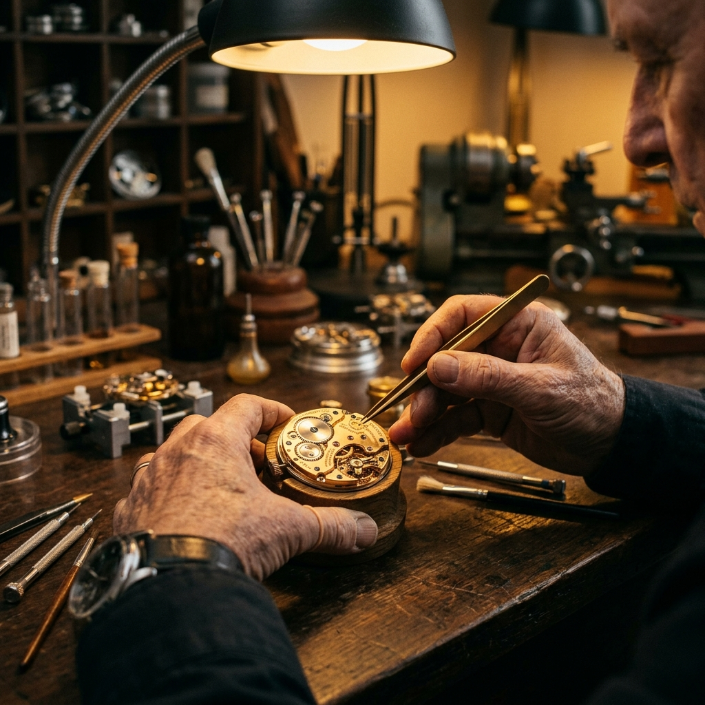

Setiap jam tangan LuxeTimepiece diciptakan dengan presisi tinggi oleh para pengrajin terbaik, menggabungkan tradisi horologi berabad-abad dengan inovasi terkini.

Tiga masterpiece yang merepresentasikan puncak keahlian horologi — dirancang untuk mereka yang menghargai keindahan abadi.

Koleksi Warisan

Koleksi Performance

Koleksi Explorer

Selama lebih dari satu abad, LuxeTimepiece telah mendedikasikan diri pada seni horologi tertinggi. Bermula dari sebuah bengkel kecil di jantung Swiss, kami kini dikenal sebagai salah satu rumah jam tangan paling prestisius di dunia.
Setiap jam tangan kami melewati lebih dari 800 jam proses pembuatan tangan, melibatkan keahlian generasi turun-temurun yang tak tergantikan oleh mesin manapun.
Setiap detail dirancang dengan perhatian penuh — dari bahan premium hingga mekanisme presisi tertinggi.
Mesin mekanis buatan Swiss dengan akurasi kronometer ±0.5 detik per hari, disertifikasi COSC.
Baja tahan karat 904L, titanium, dan emas 18 karat dengan kristal safir anti gores.
Tahan air hingga kedalaman 300 meter dengan gasket triple-seal dan crown sekrup.
Garansi internasional seumur hidup dengan layanan servis premium di seluruh dunia.
Mendengar langsung dari para kolektor dan penikmat jam tangan yang mempercayakan pilihan mereka pada LuxeTimepiece.